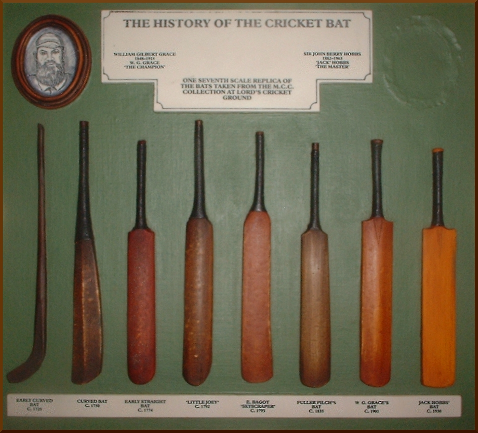
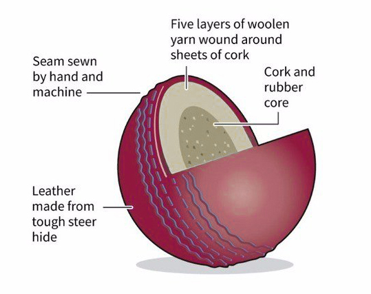
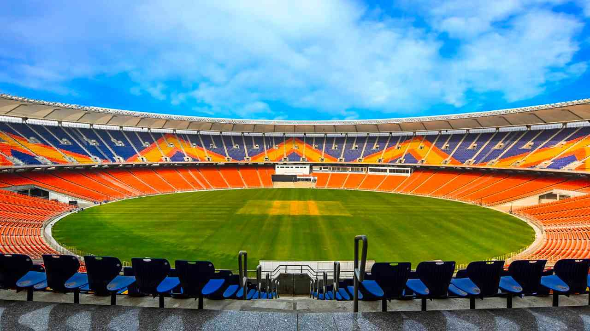
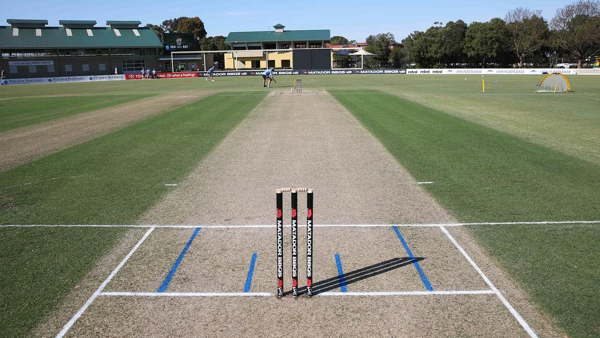
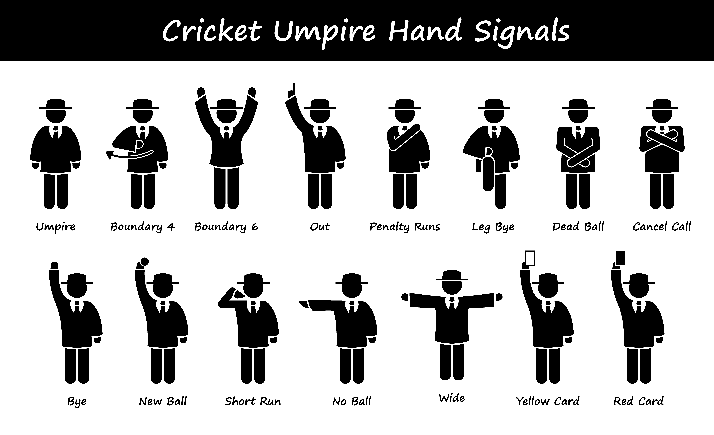
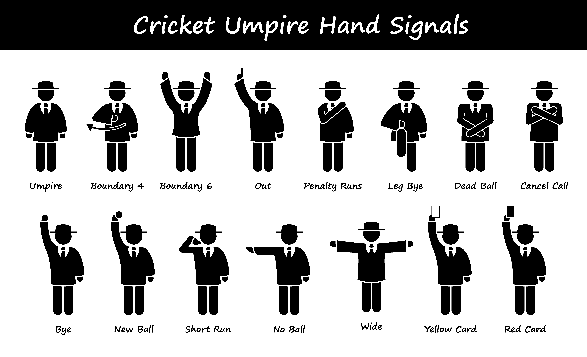
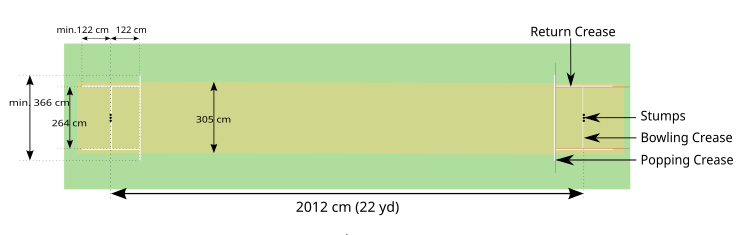

I Choose Cricket as My Blog Topic :
Introduction about Cricket
The sport of cricket has a known history beginning in the late 16th century England. It became an established sport in the country in the 18th century and developed globally in the 19th and 20th centuries. International matches have been played since the 19th-century and formal Test cricket matches are considered to date from 1877. Cricket is the world's second most popular spectator sport after association football (soccer).[1]
Internationally, cricket is governed by the International Cricket Council (ICC), which has over one hundred countries and territories in membership although only twelve currently play Test cricket.
The game's rules are defined in the "Laws of cricket". The game has various formats, ranging from T-10(Ten-10) played in around 90 minutes to Test matches which can last up to five days. Cricket was created during Saxon or Norman times by children living in the Weald, an area of dense woodlands and clearings in south-east England that lies across Kent and Sussex.[2] The first definite written reference is from the end of the 16th century.
There have been several speculations about the game's origins, including some that it was created in France or Flanders. The earliest of these speculative references is from 1300 and concerns the future King Edward II playing at "creag and other games" in both Westminster and Newenden. It has been suggested that "creag" was an Old English word for cricket, but expert opinion is that it was an early spelling of "craic", meaning "fun and games in general".[3]
It is generally believed that cricket survived as a children's game for many generations before it was increasingly taken up by adults around the beginning of the 17th century. Possibly cricket was derived from bowls, assuming bowls is the older sport, by the intervention of a batsman trying to stop the ball from reaching its target by hitting it away. Playing on sheep-grazed land or in clearings, the original implements may have been a matted lump of sheep's wool (or even a stone or a small lump of wood) as the ball; a stick or a crook or another farm tool as the bat; and a stool or a tree stump or a gate (e.g., a wicket gate) as the wicket.
Cricket is a bat-and-ball game that is played between two teams of eleven players on a field, at the centre of which is a 22-yard (20-metre; 66-foot) pitch with a wicket at each end, each comprising two bails balanced on three stumps. Two players from the batting team (the striker and nonstriker) stand in front of either wicket holding bats, with one player from the fielding team (the bowler) bowling the ball towards the striker's wicket from the opposite end of the pitch. The striker's goal is to hit the bowled ball with the bat and then switch places with the nonstriker, with the batting team scoring one run for each exchange. Runs are also scored when the ball reaches or crosses the boundary of the field or when the ball is bowled illegally.
The fielding team tries to prevent runs from being scored by dismissing batters (so they are "out"). Means of dismissal include being bowled, when the ball hits the striker's wicket and dislodges the bails, and by the fielding side either catching the ball after it is hit by the bat but before it hits the ground or hitting a wicket with the ball before a batter can cross the crease in front of the wicket. When ten batters have been dismissed, the innings ends and the teams swap roles. Forms of cricket range from Twenty20 (also known as T20), with each team batting for a single innings of 20 overs (each "over" being a set of 6 fair opportunities for the batting team to score) and the game generally lasting three to four hours, to Test matches played over five days.
Traditionally, cricketers play in all-white kit, but in limited overs cricket, they wear club or team colours. In addition to the basic kit, some players wear protective gear to prevent injury caused by the ball, which is a hard, solid spheroid made of compressed leather with a slightly raised sewn seam enclosing a cork core layered with tightly wound string.


| fig : Cricket bat |
fig : Cricket ball |


| fig : Cricket Stadium |
fig : Cricket Pitch |
Cricket Rules
- Each team consists of 11 players. These eleven players will have varying roles in the team from batsmen, bowlers, fielders and wicket keepers. Whilst each player may have a specialist role they can take up any role should they wish.
- Pitch sizes vary greatly in cricket but are usually played on a circular grass field with a circumference of around 200m. Around the edge of the field is what’s known as the boundary edge and is basically the line between being in play and out of play.
- In the centre of the pitch will be the wicket. The wicket will have two sets of three stumps at either end and they must be 22 yards apart. At each end of the wicket is known as the crease and a line is drawn about 2 yards across the wicket from the stumps.
- The bowler will bowl the cricket ball from one end whilst the batsmen will try and hit the ball from the other end.
- Batsmen can wear a host of padding including leg guards, gloves, thigh guards, inner thigh guards, a box, a helmet and a chest guard. All players will wear spiked shoes and will all be wearing white clothing
 

| fig : Fieldset Rules |
fig : Umpire Signals |

fig : Pitch Size
The playing Field
- Pitch : At the core of the field lies the pitch, which serves as the central area where most of the action takes place. This rectangular strip of grass spans 22 yards in length and divides the field into two halves, setting the stage for thrilling encounters between teams.
- Crease : Situated at each end of the pitch, the crease is marked with precision. It consists of two distinctive sets of lines – the popping crease and the bowling crease. Batsmen position themselves behind the popping crease while bowlers deliver the ball from behind the bowling crease, forming an integral part of the game’s mechanics.
- Boundaries : To contain the playing field, boundary ropes or fences serve as enclosures. The distance between the pitch and the boundary can vary, typically spanning from 65 to 90 metres, depending on the size of the ground. These boundaries have a significant impact on scoring runs and setting fielding strategies.
- Inner circle : Within the playing field, a notable area is demarcated by a circle with a radius of approximately 30 yards. This restricted region, known as the inner circle, imposes certain fielding limitations during specific phases of the game. It amplifies the strategic elements involved in cricket and adds further depth to player roles.
- OutFieldBeyond the inner circle lies the outfield, an extensive area that extends towards the boundary. This space, typically covered with grass, exhibits variations in texture and condition, introducing additional challenges for fielders and adding a distinct dimension to the game’s dynamics.
- Fielding Positions : To optimize defensive tactics, players are strategically assigned various positions based on the situation and the type of bowler. These positions include slips, gully, point, cover, mid-off, mid-on, square leg, fine leg, and deep fielders. Each role caters to specific aspects of the game and contributes to the overall team strategy.
Different Formats
| Format |
Duration |
Innings |
Overs |
Players Restrictions |
Pace of the Game |
| Test Cricket |
Up to 5 days |
2 |
Unlimited (typically 90 - 120 overs per day) |
No Restrictions |
Slow-paced |
| One day International (ODI) |
One Day |
1 |
50 overs per side |
Field are restricted during the first 10 Overs |
Moderate-paced |
| Twenty-20 |
approximately 3 hrs |
1 |
20 Overs per Side |
Strict Fielding Restrictions for the first 6 Overs |
Fast-Paced |
Click Here to SolarSystem
Click Here to Resume